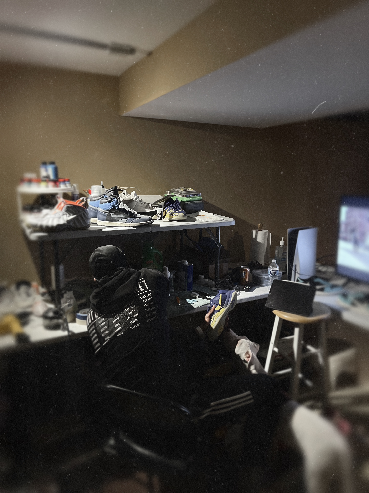

Purpose
Virgil Abloh is a designer that has inspired many creators and their impression on the relationship they have with products. Virgil Abloh’s main in focus is the overall form “things” are taking. His background in civil engineering and architecture has allowed him to apply these disciplines as a creative director and fashion designer to become one of the most celebrated artist of his time. He was the creative director of Louis Vuitton Men’s Department, also being the first African American to lead in this role, and collaborated with companies such as IKEA, Nike, and Mercedes-Benz. He also worked with artist such as Travis Scott, Kanye West, and Takashi Murakami.
Virgil launched his brand Off-White in 2013 and in 2017, he collaborated with Nike to create The 10. This collaboration completely reimagined the way the apparel industry approached collaborative design. Virgil deconstructed ten of Nike’s famous silhouettes and revised them with different materials that allows him to become disruptive in this space. In his 2017 lecture at Harvard, he mentions Marcel Duchamp and his idea to overthink the parameters of the creations he understood.
I have been inspired to branch beyond what I thought was possible in creating works of my own. This exhibition is to showcase some of the examples that motivated me to push the boundaries of preservation. Following Virgil’s “3%” rule that was inspired by the work of Marcel Duchamp, I have adopted this philosophy to enhance the experience of creating pieces that seem to be a completely different design. Similarly, this is done while maintaining the feeling of owning a piece, or product that has the same recognition of what is sought after. In my examples below, you will see the change in the standard Jordan 1 and the different approach I took into making the items personal.
by Brice Pippins
Virgil Abloh/“FRAMING GREY AREA FURNITURES”/10.27" x 9.188"/Photography/2018
Sergiy Barchuk/JORDAN ONE HIGH/Photography/9.01" x 5.01"/2020
Brice Pippins II/Deconstructed Jordan 1/Footwear/9.45" x 12.59"/2022
Brice Pippins II/Reimagined Jordan 1/Footwear/9.45" x 12.59"/2024